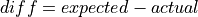
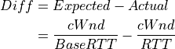
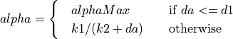
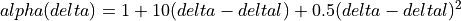

TCP models in ns-3¶
This chapter describes the TCP models available in ns-3.
Overview of support for TCP¶
ns-3 was written to support multiple TCP implementations. The implementations
inherit from a few common header classes in the src/network directory, so that
user code can swap out implementations with minimal changes to the scripts.
There are two important abstract base classes:
class
TcpSocket: This is defined insrc/internet/model/tcp-socket.{cc,h}. This class exists for hosting TcpSocket attributes that can be reused across different implementations. For instance, the attributeInitialCwndcan be used for any of the implementations that derive from classTcpSocket.class
TcpSocketFactory: This is used by the layer-4 protocol instance to create TCP sockets of the right type.
There are presently two active and one legacy implementations of TCP available for ns-3.
a natively implemented TCP for ns-3
support for kernel implementations via Direct Code Execution (DCE)
(legacy) support for kernel implementations for the Network Simulation Cradle (NSC)
NSC is no longer actively supported; it requires use of gcc-5 or gcc-4.9, and only covers up to Linux kernel version 2.6.29.
It should also be mentioned that various ways of combining virtual machines with ns-3 makes available also some additional TCP implementations, but those are out of scope for this chapter.
ns-3 TCP¶
In brief, the native ns-3 TCP model supports a full bidirectional TCP with connection setup and close logic. Several congestion control algorithms are supported, with NewReno the default, and Westwood, Hybla, HighSpeed, Vegas, Scalable, Veno, Binary Increase Congestion Control (BIC), Yet Another HighSpeed TCP (YeAH), Illinois, H-TCP, Low Extra Delay Background Transport (LEDBAT), TCP Low Priority (TCP-LP) and and Data Center TCP (DCTCP) also supported. The model also supports Selective Acknowledgements (SACK), Proportional Rate Reduction (PRR) and Explicit Congestion Notification (ECN). Multipath-TCP is not yet supported in the ns-3 releases.
Model history¶
Until the ns-3.10 release, ns-3 contained a port of the TCP model from GTNetS, developed initially by George Riley and ported to ns-3 by Raj Bhattacharjea. This implementation was substantially rewritten by Adriam Tam for ns-3.10. In 2015, the TCP module was redesigned in order to create a better environment for creating and carrying out automated tests. One of the main changes involves congestion control algorithms, and how they are implemented.
Before the ns-3.25 release, a congestion control was considered as a stand-alone TCP through an inheritance relation: each congestion control (e.g. TcpNewReno) was a subclass of TcpSocketBase, reimplementing some inherited methods. The architecture was redone to avoid this inheritance, the fundamental principle of the GSoC proposal was avoiding this inheritance, by making each congestion control a separate class, and making an interface to exchange important data between TcpSocketBase and the congestion modules. For instance, similar modularity is used in Linux.
Along with congestion control, Fast Retransmit and Fast Recovery algorithms have been modified; in previous releases, these algorithms were demanded to TcpSocketBase subclasses. Starting from ns-3.25, they have been merged inside TcpSocketBase. In future releases, they can be extracted as separate modules, following the congestion control design.
Acknowledgments¶
As mentioned above, ns-3 TCP has had multiple authors and maintainers over the years. Several publications exist on aspects of ns-3 TCP, and users of ns-3 TCP are requested to cite one of the applicable papers when publishing new work.
A general reference on the current architecture is found in the following paper:
Maurizio Casoni, Natale Patriciello, Next-generation TCP for ns-3 simulator, Simulation Modelling Practice and Theory, Volume 66, 2016, Pages 81-93. (http://www.sciencedirect.com/science/article/pii/S1569190X15300939)
For an academic peer-reviewed paper on the SACK implementation in ns-3, please refer to:
Natale Patriciello. 2017. A SACK-based Conservative Loss Recovery Algorithm for ns-3 TCP: a Linux-inspired Proposal. In Proceedings of the Workshop on ns-3 (WNS3 ‘17). ACM, New York, NY, USA, 1-8. (https://dl.acm.org/citation.cfm?id=3067666)
Usage¶
In many cases, usage of TCP is set at the application layer by telling the ns-3 application which kind of socket factory to use.
Using the helper functions defined in src/applications/helper and
src/network/helper, here is how one would create a TCP receiver:
// Create a packet sink on the star "hub" to receive these packets
uint16_t port = 50000;
Address sinkLocalAddress(InetSocketAddress (Ipv4Address::GetAny (), port));
PacketSinkHelper sinkHelper ("ns3::TcpSocketFactory", sinkLocalAddress);
ApplicationContainer sinkApp = sinkHelper.Install (serverNode);
sinkApp.Start (Seconds (1.0));
sinkApp.Stop (Seconds (10.0));
Similarly, the below snippet configures OnOffApplication traffic source to use TCP:
// Create the OnOff applications to send TCP to the server
OnOffHelper clientHelper ("ns3::TcpSocketFactory", Address ());
The careful reader will note above that we have specified the TypeId of an
abstract base class TcpSocketFactory. How does the script tell
ns-3 that it wants the native ns-3 TCP vs. some other one? Well, when
internet stacks are added to the node, the default TCP implementation that is
aggregated to the node is the ns-3 TCP. This can be overridden as we show
below when using Network Simulation Cradle. So, by default, when using the ns-3
helper API, the TCP that is aggregated to nodes with an Internet stack is the
native ns-3 TCP.
To configure behavior of TCP, a number of parameters are exported through the
ns-3 attribute system. These are documented in the Doxygen for class
TcpSocket. For example, the maximum segment size is a
settable attribute.
To set the default socket type before any internet stack-related objects are created, one may put the following statement at the top of the simulation program:
Config::SetDefault ("ns3::TcpL4Protocol::SocketType", StringValue ("ns3::TcpNewReno"));
For users who wish to have a pointer to the actual socket (so that
socket operations like Bind(), setting socket options, etc. can be
done on a per-socket basis), Tcp sockets can be created by using the
Socket::CreateSocket() method. The TypeId passed to CreateSocket()
must be of type ns3::SocketFactory, so configuring the underlying
socket type must be done by twiddling the attribute associated with the
underlying TcpL4Protocol object. The easiest way to get at this would be
through the attribute configuration system. In the below example,
the Node container “n0n1” is accessed to get the zeroth element, and a socket is
created on this node:
// Create and bind the socket...
TypeId tid = TypeId::LookupByName ("ns3::TcpNewReno");
Config::Set ("/NodeList/*/$ns3::TcpL4Protocol/SocketType", TypeIdValue (tid));
Ptr<Socket> localSocket =
Socket::CreateSocket (n0n1.Get (0), TcpSocketFactory::GetTypeId ());
Above, the “*” wild card for node number is passed to the attribute configuration system, so that all future sockets on all nodes are set to NewReno, not just on node ‘n0n1.Get (0)’. If one wants to limit it to just the specified node, one would have to do something like:
// Create and bind the socket...
TypeId tid = TypeId::LookupByName ("ns3::TcpNewReno");
std::stringstream nodeId;
nodeId << n0n1.Get (0)->GetId ();
std::string specificNode = "/NodeList/" + nodeId.str () + "/$ns3::TcpL4Protocol/SocketType";
Config::Set (specificNode, TypeIdValue (tid));
Ptr<Socket> localSocket =
Socket::CreateSocket (n0n1.Get (0), TcpSocketFactory::GetTypeId ());
Once a TCP socket is created, one will want to follow conventional socket logic and either connect() and send() (for a TCP client) or bind(), listen(), and accept() (for a TCP server). Please note that applications usually create the sockets they use automatically, and so is not straightforward to connect directly to them using pointers. Please refer to the source code of your preferred application to discover how and when it creates the socket.
TCP Socket interaction and interface with Application layer¶
In the following there is an analysis on the public interface of the TCP socket, and how it can be used to interact with the socket itself. An analysis of the callback fired by the socket is also carried out. Please note that, for the sake of clarity, we will use the terminology “Sender” and “Receiver” to clearly divide the functionality of the socket. However, in TCP these two roles can be applied at the same time (i.e. a socket could be a sender and a receiver at the same time): our distinction does not lose generality, since the following definition can be applied to both sockets in case of full-duplex mode.
TCP state machine (for commodity use)

TCP State machine¶
In ns-3 we are fully compliant with the state machine depicted in Figure TCP State machine.
Public interface for receivers (e.g. servers receiving data)
- Bind()
Bind the socket to an address, or to a general endpoint. A general endpoint is an endpoint with an ephemeral port allocation (that is, a random port allocation) on the 0.0.0.0 IP address. For instance, in current applications, data senders usually binds automatically after a Connect() over a random port. Consequently, the connection will start from this random port towards the well-defined port of the receiver. The IP 0.0.0.0 is then translated by lower layers into the real IP of the device.
- Bind6()
Same as Bind(), but for IPv6.
- BindToNetDevice()
Bind the socket to the specified NetDevice, creating a general endpoint.
- Listen()
Listen on the endpoint for an incoming connection. Please note that this function can be called only in the TCP CLOSED state, and transit in the LISTEN state. When an incoming request for connection is detected (i.e. the other peer invoked Connect()) the application will be signaled with the callback NotifyConnectionRequest (set in SetAcceptCallback() beforehand). If the connection is accepted (the default behavior, when the associated callback is a null one) the Socket will fork itself, i.e. a new socket is created to handle the incoming data/connection, in the state SYN_RCVD. Please note that this newly created socket is not connected anymore to the callbacks on the “father” socket (e.g. DataSent, Recv); the pointer of the newly created socket is provided in the Callback NotifyNewConnectionCreated (set beforehand in SetAcceptCallback), and should be used to connect new callbacks to interesting events (e.g. Recv callback). After receiving the ACK of the SYN-ACK, the socket will set the congestion control, move into ESTABLISHED state, and then notify the application with NotifyNewConnectionCreated.
- ShutdownSend()
Signal a termination of send, or in other words prevents data from being added to the buffer. After this call, if buffer is already empty, the socket will send a FIN, otherwise FIN will go when buffer empties. Please note that this is useful only for modeling “Sink” applications. If you have data to transmit, please refer to the Send() / Close() combination of API.
- GetRxAvailable()
Get the amount of data that could be returned by the Socket in one or multiple call to Recv or RecvFrom. Please use the Attribute system to configure the maximum available space on the receiver buffer (property “RcvBufSize”).
- Recv()
Grab data from the TCP socket. Please remember that TCP is a stream socket, and it is allowed to concatenate multiple packets into bigger ones. If no data is present (i.e. GetRxAvailable returns 0) an empty packet is returned. Set the callback RecvCallback through SetRecvCallback() in order to have the application automatically notified when some data is ready to be read. It’s important to connect that callback to the newly created socket in case of forks.
- RecvFrom()
Same as Recv, but with the source address as parameter.
Public interface for senders (e.g. clients uploading data)
- Connect()
Set the remote endpoint, and try to connect to it. The local endpoint should be set before this call, or otherwise an ephemeral one will be created. The TCP then will be in the SYN_SENT state. If a SYN-ACK is received, the TCP will setup the congestion control, and then call the callback ConnectionSucceeded.
- GetTxAvailable()
Return the amount of data that can be stored in the TCP Tx buffer. Set this property through the Attribute system (“SndBufSize”).
- Send()
Send the data into the TCP Tx buffer. From there, the TCP rules will decide if, and when, this data will be transmitted. Please note that, if the tx buffer has enough data to fill the congestion (or the receiver) window, dynamically varying the rate at which data is injected in the TCP buffer does not have any noticeable effect on the amount of data transmitted on the wire, that will continue to be decided by the TCP rules.
- SendTo()
Same as Send().
- Close()
Terminate the local side of the connection, by sending a FIN (after all data in the tx buffer has been transmitted). This does not prevent the socket in receiving data, and employing retransmit mechanism if losses are detected. If the application calls Close() with unread data in its rx buffer, the socket will send a reset. If the socket is in the state SYN_SENT, CLOSING, LISTEN, FIN_WAIT_2, or LAST_ACK, after that call the application will be notified with NotifyNormalClose(). In other cases, the notification is delayed (see NotifyNormalClose()).
Public callbacks
These callbacks are called by the TCP socket to notify the application of interesting events. We will refer to these with the protected name used in socket.h, but we will provide the API function to set the pointers to these callback as well.
- NotifyConnectionSucceeded: SetConnectCallback, 1st argument
Called in the SYN_SENT state, before moving to ESTABLISHED. In other words, we have sent the SYN, and we received the SYN-ACK: the socket prepares the sequence numbers, sends the ACK for the SYN-ACK, tries to send out more data (in another segment) and then invokes this callback. After this callback, it invokes the NotifySend callback.
- NotifyConnectionFailed: SetConnectCallback, 2nd argument
Called after the SYN retransmission count goes to 0. SYN packet is lost multiple times, and the socket gives up.
- NotifyNormalClose: SetCloseCallbacks, 1st argument
A normal close is invoked. A rare case is when we receive an RST segment (or a segment with bad flags) in normal states. All other cases are: - The application tries to Connect() over an already connected socket - Received an ACK for the FIN sent, with or without the FIN bit set (we are in LAST_ACK) - The socket reaches the maximum amount of retries in retransmitting the SYN (*) - We receive a timeout in the LAST_ACK state - Upon entering the TIME_WAIT state, before waiting the 2*Maximum Segment Lifetime seconds to finally deallocate the socket.
- NotifyErrorClose: SetCloseCallbacks, 2nd argument
Invoked when we send an RST segment (for whatever reason) or we reached the maximum amount of data retries.
- NotifyConnectionRequest: SetAcceptCallback, 1st argument
Invoked in the LISTEN state, when we receive a SYN. The return value indicates if the socket should accept the connection (return true) or should ignore it (return false).
- NotifyNewConnectionCreated: SetAcceptCallback, 2nd argument
Invoked when from SYN_RCVD the socket passes to ESTABLISHED, and after setting up the congestion control, the sequence numbers, and processing the incoming ACK. If there is some space in the buffer, NotifySend is called shortly after this callback. The Socket pointer, passed with this callback, is the newly created socket, after a Fork().
- NotifyDataSent: SetDataSentCallback
The Socket notifies the application that some bytes have been transmitted on the IP level. These bytes could still be lost in the node (traffic control layer) or in the network.
- NotifySend: SetSendCallback
Invoked if there is some space in the tx buffer when entering the ESTABLISHED state (e.g. after the ACK for SYN-ACK is received), after the connection succeeds (e.g. after the SYN-ACK is received) and after each new ACK (i.e. that advances SND.UNA).
- NotifyDataRecv: SetRecvCallback
Called when in the receiver buffer there are in-order bytes, and when in FIN_WAIT_1 or FIN_WAIT_2 the socket receive a in-sequence FIN (that can carry data).
Congestion Control Algorithms¶
Here follows a list of supported TCP congestion control algorithms. For an academic peer-reviewed paper on these congestion control algorithms, see http://dl.acm.org/citation.cfm?id=2756518 .
NewReno¶
NewReno algorithm introduces partial ACKs inside the well-established Reno algorithm. This and other modifications are described in RFC 6582. We have two possible congestion window increment strategy: slow start and congestion avoidance. Taken from RFC 5681:
During slow start, a TCP increments cwnd by at most SMSS bytes for each ACK received that cumulatively acknowledges new data. Slow start ends when cwnd exceeds ssthresh (or, optionally, when it reaches it, as noted above) or when congestion is observed. While traditionally TCP implementations have increased cwnd by precisely SMSS bytes upon receipt of an ACK covering new data, we RECOMMEND that TCP implementations increase cwnd, per Equation (1), where N is the number of previously unacknowledged bytes acknowledged in the incoming ACK.
(1)¶
During congestion avoidance, cwnd is incremented by roughly 1 full-sized segment per round-trip time (RTT), and for each congestion event, the slow start threshold is halved.
HighSpeed¶
TCP HighSpeed is designed for high-capacity channels or, in general, for TCP connections with large congestion windows. Conceptually, with respect to the standard TCP, HighSpeed makes the cWnd grow faster during the probing phases and accelerates the cWnd recovery from losses. This behavior is executed only when the window grows beyond a certain threshold, which allows TCP HighSpeed to be friendly with standard TCP in environments with heavy congestion, without introducing new dangers of congestion collapse.
Mathematically:
(2)¶
The function a() is calculated using a fixed RTT the value 100 ms (the lookup table for this function is taken from RFC 3649). For each congestion event, the slow start threshold is decreased by a value that depends on the size of the slow start threshold itself. Then, the congestion window is set to such value.
(3)¶
The lookup table for the function b() is taken from the same RFC. More information at: http://dl.acm.org/citation.cfm?id=2756518
Hybla¶
The key idea behind TCP Hybla is to obtain for long RTT connections the same instantaneous transmission rate of a reference TCP connection with lower RTT. With analytical steps, it is shown that this goal can be achieved by modifying the time scale, in order for the throughput to be independent from the RTT. This independence is obtained through the use of a coefficient rho.
This coefficient is used to calculate both the slow start threshold and the congestion window when in slow start and in congestion avoidance, respectively.
More information at: http://dl.acm.org/citation.cfm?id=2756518
Westwood¶
Westwood and Westwood+ employ the AIAD (Additive Increase/Adaptive Decrease)· congestion control paradigm. When a congestion episode happens,· instead of halving the cwnd, these protocols try to estimate the network’s bandwidth and use the estimated value to adjust the cwnd.· While Westwood performs the bandwidth sampling every ACK reception,· Westwood+ samples the bandwidth every RTT.
More information at: http://dl.acm.org/citation.cfm?id=381704 and http://dl.acm.org/citation.cfm?id=2512757
Vegas¶
TCP Vegas is a pure delay-based congestion control algorithm implementing a proactive scheme that tries to prevent packet drops by maintaining a small backlog at the bottleneck queue. Vegas continuously samples the RTT and computes the actual throughput a connection achieves using Equation (4) and compares it with the expected throughput calculated in Equation (5). The difference between these 2 sending rates in Equation (6) reflects the amount of extra packets being queued at the bottleneck.
(4)¶
(5)¶
(6)¶
To avoid congestion, Vegas linearly increases/decreases its congestion window to ensure the diff value falls between the two predefined thresholds, alpha and beta. diff and another threshold, gamma, are used to determine when Vegas should change from its slow-start mode to linear increase/decrease mode. Following the implementation of Vegas in Linux, we use 2, 4, and 1 as the default values of alpha, beta, and gamma, respectively, but they can be modified through the Attribute system.
More information at: http://dx.doi.org/10.1109/49.464716
Scalable¶
Scalable improves TCP performance to better utilize the available bandwidth of a highspeed wide area network by altering NewReno congestion window adjustment algorithm. When congestion has not been detected, for each ACK received in an RTT, Scalable increases its cwnd per:
(7)¶
Following Linux implementation of Scalable, we use 50 instead of 100 to account for delayed ACK.
On the first detection of congestion in a given RTT, cwnd is reduced based on the following equation:
(8)¶
More information at: http://dl.acm.org/citation.cfm?id=956989
Veno¶
TCP Veno enhances Reno algorithm for more effectively dealing with random packet loss in wireless access networks by employing Vegas’s method in estimating the backlog at the bottleneck queue to distinguish between congestive and non-congestive states.
The backlog (the number of packets accumulated at the bottleneck queue) is calculated using Equation (9):
(9)¶
where:
(10)¶
Veno makes decision on cwnd modification based on the calculated N and its predefined threshold beta.
Specifically, it refines the additive increase algorithm of Reno so that the connection can stay longer in the stable state by incrementing cwnd by 1/cwnd for every other new ACK received after the available bandwidth has been fully utilized, i.e. when N exceeds beta. Otherwise, Veno increases its cwnd by 1/cwnd upon every new ACK receipt as in Reno.
In the multiplicative decrease algorithm, when Veno is in the non-congestive state, i.e. when N is less than beta, Veno decrements its cwnd by only 1/5 because the loss encountered is more likely a corruption-based loss than a congestion-based. Only when N is greater than beta, Veno halves its sending rate as in Reno.
More information at: http://dx.doi.org/10.1109/JSAC.2002.807336
BIC¶
In TCP BIC the congestion control problem is viewed as a search problem. Taking as a starting point the current window value and as a target point the last maximum window value (i.e. the cWnd value just before the loss event) a binary search technique can be used to update the cWnd value at the midpoint between the two, directly or using an additive increase strategy if the distance from the current window is too large.
This way, assuming a no-loss period, the congestion window logarithmically approaches the maximum value of cWnd until the difference between it and cWnd falls below a preset threshold. After reaching such a value (or the maximum window is unknown, i.e. the binary search does not start at all) the algorithm switches to probing the new maximum window with a ‘slow start’ strategy.
If a loss occur in either these phases, the current window (before the loss) can be treated as the new maximum, and the reduced (with a multiplicative decrease factor Beta) window size can be used as the new minimum.
More information at: http://ieeexplore.ieee.org/xpl/articleDetails.jsp?arnumber=1354672
YeAH¶
YeAH-TCP (Yet Another HighSpeed TCP) is a heuristic designed to balance various requirements of a state-of-the-art congestion control algorithm:
fully exploit the link capacity of high BDP networks while inducing a small number of congestion events
compete friendly with Reno flows
achieve intra and RTT fairness
robust to random losses
achieve high performance regardless of buffer size
YeAH operates between 2 modes: Fast and Slow mode. In the Fast mode when the queue occupancy is small and the network congestion level is low, YeAH increments its congestion window according to the aggressive HSTCP rule. When the number of packets in the queue grows beyond a threshold and the network congestion level is high, YeAH enters its Slow mode, acting as Reno with a decongestion algorithm. YeAH employs Vegas’ mechanism for calculating the backlog as in Equation (11). The estimation of the network congestion level is shown in Equation (12).
(11)¶
(12)¶
To ensure TCP friendliness, YeAH also implements an algorithm to detect the presence of legacy Reno flows. Upon the receipt of 3 duplicate ACKs, YeAH decreases its slow start threshold according to Equation (13) if it’s not competing with Reno flows. Otherwise, the ssthresh is halved as in Reno:
(13)¶
More information: http://www.csc.lsu.edu/~sjpark/cs7601/4-YeAH_TCP.pdf
Illinois¶
TCP Illinois is a hybrid congestion control algorithm designed for high-speed networks. Illinois implements a Concave-AIMD (or C-AIMD) algorithm that uses packet loss as the primary congestion signal to determine the direction of window update and queueing delay as the secondary congestion signal to determine the amount of change.
The additive increase and multiplicative decrease factors (denoted as alpha and beta, respectively) are functions of the current average queueing delay da as shown in Equations (14) and (15). To improve the protocol robustness against sudden fluctuations in its delay sampling, Illinois allows the increment of alpha to alphaMax only if da stays below d1 for a some (theta) amount of time.
(14)¶
(15)¶
where the calculations of k1, k2, k3, and k4 are shown in the following:
(16)¶
(17)¶
(18)¶
(19)¶
Other parameters include da (the current average queueing delay), and Ta (the average RTT, calculated as sumRtt / cntRtt in the implementation) and Tmin (baseRtt in the implementation) which is the minimum RTT ever seen. dm is the maximum (average) queueing delay, and Tmax (maxRtt in the implementation) is the maximum RTT ever seen.
(20)¶
(21)¶
(22)¶
Illinois only executes its adaptation of alpha and beta when cwnd exceeds a threshold called winThresh. Otherwise, it sets alpha and beta to the base values of 1 and 0.5, respectively.
Following the implementation of Illinois in the Linux kernel, we use the following default parameter settings:
alphaMin = 0.3 (0.1 in the Illinois paper)
alphaMax = 10.0
betaMin = 0.125
betaMax = 0.5
winThresh = 15 (10 in the Illinois paper)
theta = 5
eta1 = 0.01
eta2 = 0.1
eta3 = 0.8
More information: http://www.doi.org/10.1145/1190095.1190166
H-TCP¶
H-TCP has been designed for high BDP (Bandwidth-Delay Product) paths. It is
a dual mode protocol. In normal conditions, it works like traditional TCP
with the same rate of increment and decrement for the congestion window.
However, in high BDP networks, when it finds no congestion on the path
after deltal seconds, it increases the window size based on the alpha
function in the following:
(23)¶
where deltal is a threshold in seconds for switching between the modes and
delta is the elapsed time from the last congestion. During congestion,
it reduces the window size by multiplying by beta function provided
in the reference paper. The calculated throughput between the last two
consecutive congestion events is considered for beta calculation.
The transport TcpHtcp can be selected in the program
examples/tcp/tcp-variants-comparison.cc to perform an experiment with H-TCP,
although it is useful to increase the bandwidth in this example (e.g.
to 20 Mb/s) to create a higher BDP link, such as
./waf --run "tcp-variants-comparison --transport_prot=TcpHtcp --bandwidth=20Mbps --duration=10"
More information (paper): http://www.hamilton.ie/net/htcp3.pdf
More information (Internet Draft): https://tools.ietf.org/html/draft-leith-tcp-htcp-06
LEDBAT¶
Low Extra Delay Background Transport (LEDBAT) is an experimental delay-based congestion control algorithm that seeks to utilize the available bandwidth on an end-to-end path while limiting the consequent increase in queueing delay on that path. LEDBAT uses changes in one-way delay measurements to limit congestion that the flow itself induces in the network.
As a first approximation, the LEDBAT sender operates as shown below:
On receipt of an ACK:

TARGET is the maximum queueing delay that LEDBAT itself may introduce in the
network, and GAIN determines the rate at which the cwnd responds to changes in
queueing delay; offtarget is a normalized value representing the difference between
the measured current queueing delay and the predetermined TARGET delay. offtarget can
be positive or negative; consequently, cwnd increases or decreases in proportion to
offtarget.
Following the recommendation of RFC 6817, the default values of the parameters are:
TargetDelay = 100
baseHistoryLen = 10
noiseFilterLen = 4
Gain = 1
To enable LEDBAT on all TCP sockets, the following configuration can be used:
Config::SetDefault ("ns3::TcpL4Protocol::SocketType", TypeIdValue (TcpLedbat::GetTypeId ()));
To enable LEDBAT on a chosen TCP socket, the following configuration can be used:
Config::Set ("$ns3::NodeListPriv/NodeList/1/$ns3::TcpL4Protocol/SocketType", TypeIdValue (TcpLedbat::GetTypeId ()));
The following unit tests have been written to validate the implementation of LEDBAT:
LEDBAT should operate same as NewReno during slow start
LEDBAT should operate same as NewReno if timestamps are disabled
Test to validate cwnd increment in LEDBAT
In comparison to RFC 6817, the scope and limitations of the current LEDBAT implementation are:
It assumes that the clocks on the sender side and receiver side are synchronised
In line with Linux implementation, the one-way delay is calculated at the sender side by using the timestamps option in TCP header
Only the MIN function is used for noise filtering
More information about LEDBAT is available in RFC 6817: https://tools.ietf.org/html/rfc6817
TCP-LP¶
TCP-Low Priority (TCP-LP) is a delay based congestion control protocol in which the low priority data utilizes only the excess bandwidth available on an end-to-end path. TCP-LP uses one way delay measurements as an indicator of congestion as it does not influence cross-traffic in the reverse direction.
On receipt of an ACK:

where owdMin and owdMax are the minimum and maximum one way delays experienced throughout the connection, LP_WITHIN_INF indicates if TCP-LP is in inference phase or not
More information (paper): http://cs.northwestern.edu/~akuzma/rice/doc/TCP-LP.pdf
Data Center TCP (DCTCP)¶
DCTCP is an enhancement to the TCP congestion control algorithm for data center networks and leverages Explicit Congestion Notification (ECN) to provide more fine-grained congestion feedback to the end hosts. DCTCP extends the Explicit Congestion Notification to estimate the fraction of bytes that encounter congestion, rather than simply detecting that the congestion has occurred. DCTCP then scales the congestion window based on this estimate. This approach achieves high burst tolerance, low latency, and high throughput with shallow-buffered switches.
Receiver functionality: If CE is set in IP header of incoming packet, send congestion notification to the sender by setting ECE in TCP header. This processing is different from standard ECN processing which sets ECE bit for every ACK until it observes CWR
Sender functionality: The sender makes use of the modified receiver ECE semantics to maintain an average of fraction of packets marked (α) by using the exponential weighted moving average as shown below:
α = (1 - g) x α + g x F
where
g is the estimation gain (between 0 and 1)
F is the fraction of packets marked in current RTT.
For windows in which at least one ACK was received with ECE set, the sender should respond by reducing the congestion window as follows, once for every window of data:
cwnd = cwnd * (1 - α / 2)
Following the recommendation of RFC 8257, the default values of the parameters are:
g = 0.0625 (i.e., 1/16)
initial alpha (α) = 1
To enable DCTCP on all TCP sockets, the following configuration can be used:
Config::SetDefault ("ns3::TcpL4Protocol::SocketType", TypeIdValue (TcpDctcp::GetTypeId ()));
To enable DCTCP on a chosen TCP socket, the following configuration can be used:
Config::Set ("$ns3::NodeListPriv/NodeList/1/$ns3::TcpL4Protocol/SocketType", TypeIdValue (TcpDctcp::GetTypeId ()));
This will take effect only if socket has already instantiated.
The ECN is enabled automatically when DCTCP is used, even if the user has not explicitly enabled it.
DCTCP depends on a simple queue management algorithm in routers / switches to mark packets. The current implementation of DCTCP in ns-3 uses RED with a simple configuration to achieve the behavior of desired queue management algorithm.
To configure RED router for DCTCP:
Config::SetDefault ("ns3::RedQueueDisc::UseEcn", BooleanValue (true));
Config::SetDefault ("ns3::RedQueueDisc::QW", DoubleValue (1.0));
Config::SetDefault ("ns3::RedQueueDisc::MinTh", DoubleValue (16));
Config::SetDefault ("ns3::RedQueueDisc::MaxTh", DoubleValue (16));
The following unit tests have been written to validate the implementation of DCTCP:
ECT flags should be set for SYN, SYN+ACK, ACK and data packets for DCTCP traffic
ECT flags should not be set for SYN, SYN+ACK and pure ACK packets, but should be set on data packets for ECN enabled traditional TCP flows
ECE should be set only when CE flags are received at receiver and even if sender doesn’t send CWR, receiver should not send ECE if it doesn’t receive packets with CE flags
DCTCP follows NewReno behavior for slow start
Test to validate cwnd decrement in DCTCP
An example program based on an experimental topology found in the original
DCTCP SIGCOMM paper is provided in examples/tcp/dctcp-example.cc.
This example uses a simple topology consisting of forty DCTCP senders
and receivers and two ECN-enabled switches to examine throughput,
fairness, and queue delay properties of the network.
This implementation was tested extensively against a version of DCTCP in the Linux kernel version 4.4 using the ns-3 direct code execution (DCE) environment. Some differences were noted:
Linux maintains its congestion window in segments and not bytes, and the arithmetic is not floating point, so some differences in the evolution of congestion window have been observed.
Linux uses pacing, while ns-3 currently does not provide a dynamically adjusting pacing implementation; segments are sent out at the line rate unless the user has enabled pacing and set the maximum pacing rate to less than the line rate.
Linux implements a state called ‘Congestion Window Reduced’ (CWR) immediately following a cwnd reduction, and performs proportional rate reduction similar to how a fast retransmit event is handled. During CWR, no cwnd additive increases are performed. This implementation does not implement CWR and performs additive increase during the round trip time that immediately follows a cwnd reduction.
More information about DCTCP is available in the RFC 8257: https://tools.ietf.org/html/rfc8257
Support for Explicit Congestion Notification (ECN)¶
ECN provides end-to-end notification of network congestion without dropping packets. It uses two bits in the IP header: ECN Capable Transport (ECT bit) and Congestion Experienced (CE bit), and two bits in the TCP header: Congestion Window Reduced (CWR) and ECN Echo (ECE).
More information is available in RFC 3168: https://tools.ietf.org/html/rfc3168
The following ECN states are declared in src/internet/model/tcp-socket-state.h
typedef enum
{
ECN_DISABLED = 0, //!< ECN disabled traffic
ECN_IDLE, //!< ECN is enabled but currently there is no action pertaining to ECE or CWR to be taken
ECN_CE_RCVD, //!< Last packet received had CE bit set in IP header
ECN_SENDING_ECE, //!< Receiver sends an ACK with ECE bit set in TCP header
ECN_ECE_RCVD, //!< Last ACK received had ECE bit set in TCP header
ECN_CWR_SENT //!< Sender has reduced the congestion window, and sent a packet with CWR bit set in TCP header. This is used for tracing.
} EcnStates_t;
Current implementation of ECN is based on RFC 3168 and is referred as Classic ECN.
The following enum represents the mode of ECN:
typedef enum
{
ClassicEcn, //!< ECN functionality as described in RFC 3168.
DctcpEcn, //!< ECN functionality as described in RFC 8257. Note: this mode is specific to DCTCP.
} EcnMode_t;
The following are some important ECN parameters:
- ::
// ECN parameters EcnMode_t m_ecnMode {ClassicEcn}; //!< ECN mode UseEcn_t m_useEcn {Off}; //!< Socket ECN capability
Enabling ECN¶
By default, support for ECN is disabled in TCP sockets. To enable, change
the value of the attribute ns3::TcpSocketBase::UseEcn to On.
Following are supported values for the same, this functionality is aligned with
Linux: https://www.kernel.org/doc/Documentation/networking/ip-sysctl.txt
typedef enum
{
Off = 0, //!< Disable
On = 1, //!< Enable
AcceptOnly = 2, //!< Enable only when the peer endpoint is ECN capable
} UseEcn_t;
For example:
Config::SetDefault ("ns3::TcpSocketBase::UseEcn", StringValue ("On"))
ECN negotiation¶
ECN capability is negotiated during the three-way TCP handshake:
Sender sends SYN + CWR + ECE
if (m_useEcn == UseEcn_t::On)
{
SendEmptyPacket (TcpHeader::SYN | TcpHeader::ECE | TcpHeader::CWR);
}
else
{
SendEmptyPacket (TcpHeader::SYN);
}
m_ecnState = ECN_DISABLED;
Receiver sends SYN + ACK + ECE
if (m_useEcn != UseEcn_t::Off && (tcpHeader.GetFlags () & (TcpHeader::CWR | TcpHeader::ECE)) == (TcpHeader::CWR | TcpHeader::ECE))
{
SendEmptyPacket (TcpHeader::SYN | TcpHeader::ACK |TcpHeader::ECE);
m_ecnState = ECN_IDLE;
}
else
{
SendEmptyPacket (TcpHeader::SYN | TcpHeader::ACK);
m_ecnState = ECN_DISABLED;
}
Sender sends ACK
if (m_useEcn != UseEcn_t::Off && (tcpHeader.GetFlags () & (TcpHeader::CWR | TcpHeader::ECE)) == (TcpHeader::ECE))
{
m_ecnState = ECN_IDLE;
}
else
{
m_ecnState = ECN_DISABLED;
}
Once the ECN-negotiation is successful, the sender sends data packets with ECT bits set in the IP header.
Note: As mentioned in Section 6.1.1 of RFC 3168, ECT bits should not be set during ECN negotiation. The ECN negotiation implemented in ns-3 follows this guideline.
ECN State Transitions¶
Initially both sender and receiver have their m_ecnState set as ECN_DISABLED
Once the ECN negotiation is successful, their states are set to ECN_IDLE
The receiver’s state changes to ECN_CE_RCVD when it receives a packet with CE bit set. The state then moves to ECN_SENDING_ECE when the receiver sends an ACK with ECE set. This state is retained until a CWR is received , following which, the state changes to ECN_IDLE.
When the sender receives an ACK with ECE bit set from receiver, its state is set as ECN_ECE_RCVD
The sender’s state changes to ECN_CWR_SENT when it sends a packet with CWR bit set. It remains in this state until an ACK with valid ECE is received (i.e., ECE is received for a packet that belongs to a new window), following which, its state changes to ECN_ECE_RCVD.
RFC 3168 compliance¶
Based on the suggestions provided in RFC 3168, the following behavior has been implemented:
Pure ACK packets should not have the ECT bit set (Section 6.1.4).
In the current implementation, the sender only sends ECT(0) in the IP header.
The sender should should reduce the congestion window only once in each window (Section 6.1.2).
The receiver should ignore the CE bits set in a packet arriving out of window (Section 6.1.5).
The sender should ignore the ECE bits set in the packet arriving out of window (Section 6.1.2).
Open issues¶
The following issues are yet to be addressed:
Retransmitted packets should not have the CWR bit set (Section 6.1.5).
Despite the congestion window size being 1 MSS, the sender should reduce its congestion window by half when it receives a packet with the ECE bit set. The sender must reset the retransmit timer on receiving the ECN-Echo packet when the congestion window is one. The sending TCP will then be able to send a new packet only when the retransmit timer expires (Section 6.1.2).
Support for separately handling the enabling of ECN on the incoming and outgoing TCP sessions (e.g. a TCP may perform ECN echoing but not set the ECT codepoints on its outbound data segments).
Validation¶
The following tests are found in the src/internet/test directory. In
general, TCP tests inherit from a class called TcpGeneralTest,
which provides common operations to set up test scenarios involving TCP
objects. For more information on how to write new tests, see the
section below on Writing TCP tests.
tcp: Basic transmission of string of data from client to server
tcp-bytes-in-flight-test: TCP correctly estimates bytes in flight under loss conditions
tcp-cong-avoid-test: TCP congestion avoidance for different packet sizes
tcp-datasentcb: Check TCP’s ‘data sent’ callback
tcp-endpoint-bug2211-test: A test for an issue that was causing stack overflow
tcp-fast-retr-test: Fast Retransmit testing
tcp-header: Unit tests on the TCP header
tcp-highspeed-test: Unit tests on the HighSpeed congestion control
tcp-htcp-test: Unit tests on the H-TCP congestion control
tcp-hybla-test: Unit tests on the Hybla congestion control
tcp-vegas-test: Unit tests on the Vegas congestion control
tcp-veno-test: Unit tests on the Veno congestion control
tcp-scalable-test: Unit tests on the Scalable congestion control
tcp-bic-test: Unit tests on the BIC congestion control
tcp-yeah-test: Unit tests on the YeAH congestion control
tcp-illinois-test: Unit tests on the Illinois congestion control
tcp-ledbat-test: Unit tests on the LEDBAT congestion control
tcp-lp-test: Unit tests on the TCP-LP congestion control
tcp-dctcp-test: Unit tests on the DCTCP congestion control
tcp-option: Unit tests on TCP options
tcp-pkts-acked-test: Unit test the number of time that PktsAcked is called
tcp-rto-test: Unit test behavior after a RTO occurs
tcp-rtt-estimation-test: Check RTT calculations, including retransmission cases
tcp-slow-start-test: Check behavior of slow start
tcp-timestamp: Unit test on the timestamp option
tcp-wscaling: Unit test on the window scaling option
tcp-zero-window-test: Unit test persist behavior for zero window conditions
tcp-close-test: Unit test on the socket closing: both receiver and sender have to close their socket when all bytes are transferred
tcp-ecn-test: Unit tests on Explicit Congestion Notification
Several tests have dependencies outside of the internet module, so they
are located in a system test directory called src/test/ns3tcp. Three
of these six tests involve use of the Network Simulation Cradle, and are
disabled if NSC is not enabled in the build.
ns3-tcp-cwnd: Check to see that ns-3 TCP congestion control works against liblinux2.6.26.so implementation
ns3-tcp-interoperability: Check to see that ns-3 TCP interoperates with liblinux2.6.26.so implementation
ns3-tcp-loss: Check behavior of ns-3 TCP upon packet losses
nsc-tcp-loss: Check behavior of NSC TCP upon packet losses
ns3-tcp-no-delay: Check that ns-3 TCP Nagle’s algorithm works correctly and that it can be disabled
ns3-tcp-socket: Check that ns-3 TCP successfully transfers an application data write of various sizes
ns3-tcp-state: Check the operation of the TCP state machine for several cases
Several TCP validation test results can also be found in the wiki page describing this implementation.
TCP ECN operation is tested in the ARED and RED tests that are documented in the traffic-control module documentation.
Writing a new congestion control algorithm¶
Writing (or porting) a congestion control algorithms from scratch (or from other systems) is a process completely separated from the internals of TcpSocketBase.
All operations that are delegated to a congestion control are contained in the class TcpCongestionOps. It mimics the structure tcp_congestion_ops of Linux, and the following operations are defined:
virtual std::string GetName () const;
virtual uint32_t GetSsThresh (Ptr<const TcpSocketState> tcb, uint32_t bytesInFlight);
virtual void IncreaseWindow (Ptr<TcpSocketState> tcb, uint32_t segmentsAcked);
virtual void PktsAcked (Ptr<TcpSocketState> tcb, uint32_t segmentsAcked,const Time& rtt);
virtual Ptr<TcpCongestionOps> Fork ();
virtual void CwndEvent (Ptr<TcpSocketState> tcb, const TcpSocketState::TcpCaEvent_t event);
The most interesting methods to write are GetSsThresh and IncreaseWindow. The latter is called when TcpSocketBase decides that it is time to increase the congestion window. Much information is available in the Transmission Control Block, and the method should increase cWnd and/or ssThresh based on the number of segments acked.
GetSsThresh is called whenever the socket needs an updated value of the slow start threshold. This happens after a loss; congestion control algorithms are then asked to lower such value, and to return it.
PktsAcked is used in case the algorithm needs timing information (such as RTT), and it is called each time an ACK is received.
CwndEvent is used in case the algorithm needs the state of socket during different congestion window event.
TCP SACK and non-SACK¶
To avoid code duplication and the effort of maintaining two different versions of the TCP core, namely RFC 6675 (TCP-SACK) and RFC 5681 (TCP congestion control), we have merged RFC 6675 in the current code base. If the receiver supports the option, the sender bases its retransmissions over the received SACK information. However, in the absence of that option, the best it can do is to follow the RFC 5681 specification (on Fast Retransmit/Recovery) and employing NewReno modifications in case of partial ACKs.
A similar concept is used in Linux with the function tcp_add_reno_sack. Our implementation resides in the TcpTxBuffer class that implements a scoreboard through two different lists of segments. TcpSocketBase actively uses the API provided by TcpTxBuffer to query the scoreboard; please refer to the Doxygen documentation (and to in-code comments) if you want to learn more about this implementation.
For an academic peer-reviewed paper on the SACK implementation in ns-3, please refer to https://dl.acm.org/citation.cfm?id=3067666.
Loss Recovery Algorithms¶
The following loss recovery algorithms are supported in ns-3 TCP:
Classic Recovery¶
Classic Recovery refers to the combination of NewReno algorithm described in RFC 6582 along with SACK based loss recovery algorithm mentioned in RFC 6675. SACK based loss recovery is used when sender and receiver support SACK options. In the case when SACK options are disabled, the NewReno modification handles the recovery.
At the start of recovery phase the congestion window is reduced diffently for NewReno and SACK based recovery. For NewReno the reduction is done as given below:

For SACK based recovery, this is done as follows:

While in the recovery phase, the congestion window is inflated by segmentSize on arrival of every ACK when NewReno is used. The congestion window is kept same when SACK based loss recovery is used.
Proportional Rate Reduction¶
Proportional Rate Reduction (PRR) is a loss recovery algorithm described in RFC 6937 and currently used in Linux. The design of PRR helps in avoiding excess window adjustments and aims to keep the congestion window as close as possible to ssThresh.
PRR updates the congestion window by comparing the values of bytesInFlight and ssThresh. If the value of bytesInFlight is greater than ssThresh, congestion window is updated as shown below:


where RecoverFS is the value of bytesInFlight at the start of recovery phase,
prrDelivered is the total bytes delivered during recovery phase,
prrOut is the total bytes sent during recovery phase and
sndcnt represents the number of bytes to be sent in response to each ACK.
Otherwise, the congestion window is updated by either using Conservative Reduction Bound (CRB) or Slow Start Reduction Bound (SSRB) with SSRB being the default Reduction Bound. Each Reduction Bound calculates a maximum data sending limit. For CRB, the limit is calculated as shown below:
For SSRB, it is calculated as:

where DeliveredData represets the total number of bytes delivered to the
receiver as indicated by the current ACK and MSS is the maximum segment size.
After limit calculation, the cWnd is updated as given below:

More information (paper): https://dl.acm.org/citation.cfm?id=2068832
More information (RFC): https://tools.ietf.org/html/rfc6937
Adding a new loss recovery algorithm in ns-3¶
Writing (or porting) a loss recovery algorithms from scratch (or from other systems) is a process completely separated from the internals of TcpSocketBase.
All operations that are delegated to a loss recovery are contained in the class TcpRecoveryOps and are given below:
virtual std::string GetName () const;
virtual void EnterRecovery (Ptr<const TcpSocketState> tcb, uint32_t unAckDataCount,
bool isSackEnabled, uint32_t dupAckCount,
uint32_t bytesInFlight, uint32_t lastDeliveredBytes);
virtual void DoRecovery (Ptr<const TcpSocketState> tcb, uint32_t unAckDataCount,
bool isSackEnabled, uint32_t dupAckCount,
uint32_t bytesInFlight, uint32_t lastDeliveredBytes);
virtual void ExitRecovery (Ptr<TcpSocketState> tcb, uint32_t bytesInFlight);
virtual void UpdateBytesSent (uint32_t bytesSent);
virtual Ptr<TcpRecoveryOps> Fork ();
EnterRecovery is called when packet loss is detected and recovery is triggered. While in recovery phase, each time when an ACK arrives, DoRecovery is called which performs the necessary congestion window changes as per the recovery algorithm. ExitRecovery is called just prior to exiting recovery phase in order to perform the required congestion window ajustments. UpdateBytesSent is used to keep track of bytes sent and is called whenever a data packet is sent during recovery phase.
Delivery Rate Estimation¶
Current TCP implementation measures the approximate value of the delivery rate of inflight data based on Delivery Rate Estimation.
As high level idea, keep in mind that the algorithm keeps track of 2 variables:
delivered: Total amount of data delivered so far.
deliveredStamp: Last time delivered was updated.
When a packet is transmitted, the value of delivered (d0) and deliveredStamp (t0) is stored in its respective TcpTxItem.
When an acknowledgement comes for this packet, the value of delivered and deliveredStamp is updated to d1 and t1 in the same TcpTxItem.
After processing the acknowledgement, the rate sample is calculated and then passed to a congestion avoidance algorithm:

The implementation to estimate delivery rate is a joint work between TcpTxBuffer and TcpRateOps. For more information, please take a look at their Doxygen documentation.
The implementation follows the Internet draft (Delivery Rate Estimation): https://tools.ietf.org/html/draft-cheng-iccrg-delivery-rate-estimation-00
Current limitations¶
TcpCongestionOps interface does not contain every possible Linux operation
Writing TCP tests¶
The TCP subsystem supports automated test cases on both socket functions and congestion control algorithms. To show how to write tests for TCP, here we explain the process of creating a test case that reproduces the `Bug #1571<https://www.nsnam.org/bugzilla/show_bug.cgi?id=1571>`_.
The bug concerns the zero window situation, which happens when the receiver cannot handle more data. In this case, it advertises a zero window, which causes the sender to pause transmission and wait for the receiver to increase the window.
The sender has a timer to periodically check the receiver’s window: however, in modern TCP implementations, when the receiver has freed a “significant” amount of data, the receiver itself sends an “active” window update, meaning that the transmission could be resumed. Nevertheless, the sender timer is still necessary because window updates can be lost.
Note
During the text, we will assume some knowledge about the general design of the TCP test infrastructure, which is explained in detail into the Doxygen documentation. As a brief summary, the strategy is to have a class that sets up a TCP connection, and that calls protected members of itself. In this way, subclasses can implement the necessary members, which will be called by the main TcpGeneralTest class when events occur. For example, after processing an ACK, the method ProcessedAck will be invoked. Subclasses interested in checking some particular things which must have happened during an ACK processing, should implement the ProcessedAck method and check the interesting values inside the method. To get a list of available methods, please check the Doxygen documentation.
We describe the writing of two test cases, covering both situations: the sender’s zero-window probing and the receiver “active” window update. Our focus will be on dealing with the reported problems, which are:
an ns-3 receiver does not send “active” window update when its receive buffer is being freed;
even if the window update is artificially crafted, the transmission does not resume.
However, other things should be checked in the test:
Persistent timer setup
Persistent timer teardown if rWnd increases
To construct the test case, one first derives from the TcpGeneralTest class:
The code is the following:
TcpZeroWindowTest::TcpZeroWindowTest (const std::string &desc)
: TcpGeneralTest (desc)
{
}
Then, one should define the general parameters for the TCP connection, which will be one-sided (one node is acting as SENDER, while the other is acting as RECEIVER):
Application packet size set to 500, and 20 packets in total (meaning a stream of 10k bytes)
Segment size for both SENDER and RECEIVER set to 500 bytes
Initial slow start threshold set to UINT32_MAX
Initial congestion window for the SENDER set to 10 segments (5000 bytes)
Congestion control: NewReno
We have also to define the link properties, because the above definition does not work for every combination of propagation delay and sender application behavior.
Link one-way propagation delay: 50 ms
Application packet generation interval: 10 ms
Application starting time: 20 s after the starting point
To define the properties of the environment (e.g. properties which should be set before the object creation, such as propagation delay) one next implements the method ConfigureEnvironment:
void
TcpZeroWindowTest::ConfigureEnvironment ()
{
TcpGeneralTest::ConfigureEnvironment ();
SetAppPktCount (20);
SetMTU (500);
SetTransmitStart (Seconds (2.0));
SetPropagationDelay (MilliSeconds (50));
}
For other properties, set after the object creation, one can use ConfigureProperties (). The difference is that some values, such as initial congestion window or initial slow start threshold, are applicable only to a single instance, not to every instance we have. Usually, methods that requires an id and a value are meant to be called inside ConfigureProperties (). Please see the Doxygen documentation for an exhaustive list of the tunable properties.
void
TcpZeroWindowTest::ConfigureProperties ()
{
TcpGeneralTest::ConfigureProperties ();
SetInitialCwnd (SENDER, 10);
}
To see the default value for the experiment, please see the implementation of both methods inside TcpGeneralTest class.
Note
If some configuration parameters are missing, add a method called “SetSomeValue” which takes as input the value only (if it is meant to be called inside ConfigureEnvironment) or the socket and the value (if it is meant to be called inside ConfigureProperties).
To define a zero-window situation, we choose (by design) to initiate the connection with a 0-byte rx buffer. This implies that the RECEIVER, in its first SYN-ACK, advertises a zero window. This can be accomplished by implementing the method CreateReceiverSocket, setting an Rx buffer value of 0 bytes (at line 6 of the following code):
1 2 3 4 5 6 7 8 9 10 11 | Ptr<TcpSocketMsgBase>
TcpZeroWindowTest::CreateReceiverSocket (Ptr<Node> node)
{
Ptr<TcpSocketMsgBase> socket = TcpGeneralTest::CreateReceiverSocket (node);
socket->SetAttribute("RcvBufSize", UintegerValue (0));
Simulator::Schedule (Seconds (10.0),
&TcpZeroWindowTest::IncreaseBufSize, this);
return socket;
}
|
Even so, to check the active window update, we should schedule an increase of the buffer size. We do this at line 7 and 8, scheduling the function IncreaseBufSize.
void
TcpZeroWindowTest::IncreaseBufSize ()
{
SetRcvBufSize (RECEIVER, 2500);
}
Which utilizes the SetRcvBufSize method to edit the RxBuffer object of the RECEIVER. As said before, check the Doxygen documentation for class TcpGeneralTest to be aware of the various possibilities that it offers.
Note
By design, we choose to maintain a close relationship between TcpSocketBase and TcpGeneralTest: they are connected by a friendship relation. Since friendship is not passed through inheritance, if one discovers that one needs to access or to modify a private (or protected) member of TcpSocketBase, one can do so by adding a method in the class TcpGeneralSocket. An example of such method is SetRcvBufSize, which allows TcpGeneralSocket subclasses to forcefully set the RxBuffer size.
void
TcpGeneralTest::SetRcvBufSize (SocketWho who, uint32_t size)
{
if (who == SENDER)
{
m_senderSocket->SetRcvBufSize (size);
}
else if (who == RECEIVER)
{
m_receiverSocket->SetRcvBufSize (size);
}
else
{
NS_FATAL_ERROR ("Not defined");
}
}
Next, we can start to follow the TCP connection:
At time 0.0 s the connection is opened sender side, with a SYN packet sent from SENDER to RECEIVER
At time 0.05 s the RECEIVER gets the SYN and replies with a SYN-ACK
At time 0.10 s the SENDER gets the SYN-ACK and replies with a SYN.
While the general structure is defined, and the connection is started, we need to define a way to check the rWnd field on the segments. To this aim, we can implement the methods Rx and Tx in the TcpGeneralTest subclass, checking each time the actions of the RECEIVER and the SENDER. These methods are defined in TcpGeneralTest, and they are attached to the Rx and Tx traces in the TcpSocketBase. One should write small tests for every detail that one wants to ensure during the connection (it will prevent the test from changing over the time, and it ensures that the behavior will stay consistent through releases). We start by ensuring that the first SYN-ACK has 0 as advertised window size:
void
TcpZeroWindowTest::Tx(const Ptr<const Packet> p, const TcpHeader &h, SocketWho who)
{
...
else if (who == RECEIVER)
{
NS_LOG_INFO ("\tRECEIVER TX " << h << " size " << p->GetSize());
if (h.GetFlags () & TcpHeader::SYN)
{
NS_TEST_ASSERT_MSG_EQ (h.GetWindowSize(), 0,
"RECEIVER window size is not 0 in the SYN-ACK");
}
}
....
}
Pratically, we are checking that every SYN packet sent by the RECEIVER has the advertised window set to 0. The same thing is done also by checking, in the Rx method, that each SYN received by SENDER has the advertised window set to 0. Thanks to the log subsystem, we can print what is happening through messages. If we run the experiment, enabling the logging, we can see the following:
./waf shell
gdb --args ./build/utils/ns3-dev-test-runner-debug --test-name=tcp-zero-window-test --stop-on-failure --fullness=QUICK --assert-on-failure --verbose
(gdb) run
0.00s TcpZeroWindowTestSuite:Tx(): 0.00 SENDER TX 49153 > 4477 [SYN] Seq=0 Ack=0 Win=32768 ns3::TcpOptionWinScale(2) ns3::TcpOptionTS(0;0) size 36
0.05s TcpZeroWindowTestSuite:Rx(): 0.05 RECEIVER RX 49153 > 4477 [SYN] Seq=0 Ack=0 Win=32768 ns3::TcpOptionWinScale(2) ns3::TcpOptionTS(0;0) ns3::TcpOptionEnd(EOL) size 0
0.05s TcpZeroWindowTestSuite:Tx(): 0.05 RECEIVER TX 4477 > 49153 [SYN|ACK] Seq=0 Ack=1 Win=0 ns3::TcpOptionWinScale(0) ns3::TcpOptionTS(50;0) size 36
0.10s TcpZeroWindowTestSuite:Rx(): 0.10 SENDER RX 4477 > 49153 [SYN|ACK] Seq=0 Ack=1 Win=0 ns3::TcpOptionWinScale(0) ns3::TcpOptionTS(50;0) ns3::TcpOptionEnd(EOL) size 0
0.10s TcpZeroWindowTestSuite:Tx(): 0.10 SENDER TX 49153 > 4477 [ACK] Seq=1 Ack=1 Win=32768 ns3::TcpOptionTS(100;50) size 32
0.15s TcpZeroWindowTestSuite:Rx(): 0.15 RECEIVER RX 49153 > 4477 [ACK] Seq=1 Ack=1 Win=32768 ns3::TcpOptionTS(100;50) ns3::TcpOptionEnd(EOL) size 0
(...)
The output is cut to show the threeway handshake. As we can see from the headers, the rWnd of RECEIVER is set to 0, and thankfully our tests are not failing. Now we need to test for the persistent timer, which should be started by the SENDER after it receives the SYN-ACK. Since the Rx method is called before any computation on the received packet, we should utilize another method, namely ProcessedAck, which is the method called after each processed ACK. In the following, we show how to check if the persistent event is running after the processing of the SYN-ACK:
void
TcpZeroWindowTest::ProcessedAck (const Ptr<const TcpSocketState> tcb,
const TcpHeader& h, SocketWho who)
{
if (who == SENDER)
{
if (h.GetFlags () & TcpHeader::SYN)
{
EventId persistentEvent = GetPersistentEvent (SENDER);
NS_TEST_ASSERT_MSG_EQ (persistentEvent.IsRunning (), true,
"Persistent event not started");
}
}
}
Since we programmed the increase of the buffer size after 10 simulated seconds, we expect the persistent timer to fire before any rWnd changes. When it fires, the SENDER should send a window probe, and the receiver should reply reporting again a zero window situation. At first, we investigates on what the sender sends:
1 2 3 4 5 6 7 8 9 10 11 12 13 14 15 16 17 18 19 | if (Simulator::Now ().GetSeconds () <= 6.0)
{
NS_TEST_ASSERT_MSG_EQ (p->GetSize () - h.GetSerializedSize(), 0,
"Data packet sent anyway");
}
else if (Simulator::Now ().GetSeconds () > 6.0 &&
Simulator::Now ().GetSeconds () <= 7.0)
{
NS_TEST_ASSERT_MSG_EQ (m_zeroWindowProbe, false, "Sent another probe");
if (! m_zeroWindowProbe)
{
NS_TEST_ASSERT_MSG_EQ (p->GetSize () - h.GetSerializedSize(), 1,
"Data packet sent instead of window probe");
NS_TEST_ASSERT_MSG_EQ (h.GetSequenceNumber(), SequenceNumber32 (1),
"Data packet sent instead of window probe");
m_zeroWindowProbe = true;
}
}
|
We divide the events by simulated time. At line 1, we check everything that happens before the 6.0 seconds mark; for instance, that no data packets are sent, and that the state remains OPEN for both sender and receiver.
Since the persist timeout is initialized at 6 seconds (exercise left for the reader: edit the test, getting this value from the Attribute system), we need to check (line 6) between 6.0 and 7.0 simulated seconds that the probe is sent. Only one probe is allowed, and this is the reason for the check at line 11.
1 2 3 4 5 6 7 8 | if (Simulator::Now ().GetSeconds () > 6.0 &&
Simulator::Now ().GetSeconds () <= 7.0)
{
NS_TEST_ASSERT_MSG_EQ (h.GetSequenceNumber(), SequenceNumber32 (1),
"Data packet sent instead of window probe");
NS_TEST_ASSERT_MSG_EQ (h.GetWindowSize(), 0,
"No zero window advertised by RECEIVER");
}
|
For the RECEIVER, the interval between 6 and 7 seconds is when the zero-window segment is sent.
Other checks are redundant; the safest approach is to deny any other packet exchange between the 7 and 10 seconds mark.
else if (Simulator::Now ().GetSeconds () > 7.0 &&
Simulator::Now ().GetSeconds () < 10.0)
{
NS_FATAL_ERROR ("No packets should be sent before the window update");
}
The state checks are performed at the end of the methods, since they are valid in every condition:
NS_TEST_ASSERT_MSG_EQ (GetCongStateFrom (GetTcb(SENDER)), TcpSocketState::CA_OPEN,
"Sender State is not OPEN");
NS_TEST_ASSERT_MSG_EQ (GetCongStateFrom (GetTcb(RECEIVER)), TcpSocketState::CA_OPEN,
"Receiver State is not OPEN");
Now, the interesting part in the Tx method is to check that after the 10.0 seconds mark (when the RECEIVER sends the active window update) the value of the window should be greater than zero (and precisely, set to 2500):
else if (Simulator::Now().GetSeconds() >= 10.0)
{
NS_TEST_ASSERT_MSG_EQ (h.GetWindowSize(), 2500,
"Receiver window not updated");
}
To be sure that the sender receives the window update, we can use the Rx method:
1 2 3 4 5 6 | if (Simulator::Now().GetSeconds() >= 10.0)
{
NS_TEST_ASSERT_MSG_EQ (h.GetWindowSize(), 2500,
"Receiver window not updated");
m_windowUpdated = true;
}
|
We check every packet after the 10 seconds mark to see if it has the window updated. At line 5, we also set to true a boolean variable, to check that we effectively reach this test.
Last but not least, we implement also the NormalClose() method, to check that the connection ends with a success:
void
TcpZeroWindowTest::NormalClose (SocketWho who)
{
if (who == SENDER)
{
m_senderFinished = true;
}
else if (who == RECEIVER)
{
m_receiverFinished = true;
}
}
The method is called only if all bytes are transmitted successfully. Then, in the method FinalChecks(), we check all variables, which should be true (which indicates that we have perfectly closed the connection).
void
TcpZeroWindowTest::FinalChecks ()
{
NS_TEST_ASSERT_MSG_EQ (m_zeroWindowProbe, true,
"Zero window probe not sent");
NS_TEST_ASSERT_MSG_EQ (m_windowUpdated, true,
"Window has not updated during the connection");
NS_TEST_ASSERT_MSG_EQ (m_senderFinished, true,
"Connection not closed successfully (SENDER)");
NS_TEST_ASSERT_MSG_EQ (m_receiverFinished, true,
"Connection not closed successfully (RECEIVER)");
}
To run the test, the usual way is
./test.py -s tcp-zero-window-test
PASS: TestSuite tcp-zero-window-test
1 of 1 tests passed (1 passed, 0 skipped, 0 failed, 0 crashed, 0 valgrind errors)
To see INFO messages, use a combination of ./waf shell and gdb (really useful):
./waf shell && gdb --args ./build/utils/ns3-dev-test-runner-debug --test-name=tcp-zero-window-test --stop-on-failure --fullness=QUICK --assert-on-failure --verbose
and then, hit “Run”.
Note
This code magically runs without any reported errors; however, in real cases, when you discover a bug you should expect the existing test to fail (this could indicate a well-written test and a bad-writted model, or a bad-written test; hopefully the first situation). Correcting bugs is an iterative process. For instance, commits created to make this test case running without errors are 11633:6b74df04cf44, (others to be merged).
Network Simulation Cradle¶
The Network Simulation Cradle (NSC) is a framework for wrapping real-world network code into simulators, allowing simulation of real-world behavior at little extra cost. This work has been validated by comparing situations using a test network with the same situations in the simulator. To date, it has been shown that the NSC is able to produce extremely accurate results. NSC supports four real world stacks: FreeBSD, OpenBSD, lwIP and Linux. Emphasis has been placed on not changing any of the network stacks by hand. Not a single line of code has been changed in the network protocol implementations of any of the above four stacks. However, a custom C parser was built to programmatically change source code.
NSC has previously been ported to ns-2 and OMNeT++, and was was added to ns-3 in September 2008 (ns-3.2 release). This section describes the ns-3 port of NSC and how to use it.
NSC has been obsoleted by the Linux kernel support within Direct Code Execution (DCE). However, NSC is still available through the bake build system. NSC supports Linux kernels 2.6.18 and 2.6.26, and an experimental version of 2.6.29 exists on ns-3’s code server (http://code.nsnam.org/fw/nsc-linux-2.6.29/), but newer versions of the kernel have not been ported.
Prerequisites¶
Presently, NSC has been tested and shown to work on these platforms: Linux i386 and Linux x86-64. NSC does not support powerpc. Use on FreeBSD or OS X is unsupported (although it may be able to work).
Building NSC requires the packages flex and bison.
NSC requires use of gcc-4.9 or gcc-5 series, and will not build on newer systems lacking the older compilers.
Configuring and Downloading¶
NSC must either be downloaded separately from its own repository, or downloading when using the bake build system of ns-3.
For ns-3.17 through ns-3.28 releases, when using bake, one obtains NSC implicitly as part of an “allinone” configuration, such as:
$ cd bake
$ python bake.py configure -e ns-allinone-3.27
$ python bake.py download
$ python bake.py build
For ns-3.29 and later versions, including the ‘ns-3-allinone’ development version, one must explicitly add NSC (‘nsc-0.5.3’) to the bake configuration, such as:
$ cd bake
$ python bake.py configure -e ns-allinone-3.29 -e nsc-0.5.3
$ python bake.py download
$ python bake.py build
Instead of a released version, one may use the ns-3 development version by specifying “ns-3-allinone” to the configure step above.
NSC may also be downloaded from its download site using Mercurial:
$ hg clone https://secure.wand.net.nz/mercurial/nsc
Prior to the ns-3.17 release, NSC was included in the allinone tarball and the released version did not need to be separately downloaded.
Building and validating¶
NSC may be built as part of the bake build process; alternatively, one may build NSC by itself using its build system; e.g.:
$ cd nsc-dev
$ python scons.py
Once NSC has been built either manually or through the bake system, change into the ns-3 source directory and try running the following configuration:
$ ./waf configure
If NSC has been previously built and found by waf, then you will see:
Network Simulation Cradle : enabled
If NSC has not been found, you will see:
Network Simulation Cradle : not enabled (NSC not found (see option --with-nsc))
In this case, you must pass the relative or absolute path to the NSC libraries with the “–with-nsc” configure option; e.g.
$ ./waf configure --with-nsc=/path/to/my/nsc/directory
For ns-3 releases prior to the ns-3.17 release, using the build.py
script in ns-3-allinone directory, NSC will be built by default unless the
platform does not support it. To explicitly disable it when building ns-3,
type:
$ ./waf configure --enable-examples --enable-tests --disable-nsc
If waf detects NSC, then building ns-3 with NSC is performed the same way with waf as without it. Once ns-3 is built, try running the following test suite:
$ ./test.py -s ns3-tcp-interoperability
If NSC has been successfully built, the following test should show up in the results:
PASS TestSuite ns3-tcp-interoperability
This confirms that NSC is ready to use.
Usage¶
There are a few example files. Try:
$ ./waf --run tcp-nsc-zoo
$ ./waf --run tcp-nsc-lfn
These examples will deposit some .pcap files in your directory,
which can be examined by tcpdump or wireshark.
Let’s look at the examples/tcp/tcp-nsc-zoo.cc file for some typical
usage. How does it differ from using native ns-3 TCP? There is one main
configuration line, when using NSC and the ns-3 helper API, that needs to be
set:
InternetStackHelper internetStack;
internetStack.SetNscStack ("liblinux2.6.26.so");
// this switches nodes 0 and 1 to NSCs Linux 2.6.26 stack.
internetStack.Install (n.Get(0));
internetStack.Install (n.Get(1));
The key line is the SetNscStack. This tells the InternetStack
helper to aggregate instances of NSC TCP instead of native ns-3 TCP
to the remaining nodes. It is important that this function be called
before calling the Install() function, as shown above.
Which stacks are available to use? Presently, the focus has been on Linux 2.6.18 and Linux 2.6.26 stacks for ns-3. To see which stacks were built, one can execute the following find command at the ns-3 top level directory:
$ find nsc -name "*.so" -type f
nsc/linux-2.6.18/liblinux2.6.18.so
nsc/linux-2.6.26/liblinux2.6.26.so
This tells us that we may either pass the library name liblinux2.6.18.so or liblinux2.6.26.so to the above configuration step.
Stack configuration¶
NSC TCP shares the same configuration attributes that are common across TCP sockets, as described above and documented in Doxygen
Additionally, NSC TCP exports a lot of configuration variables into the
ns-3 attributes system, via a sysctl-like interface. In the examples/tcp/tcp-nsc-zoo example, you
can see the following configuration:
// this disables TCP SACK, wscale and timestamps on node 1 (the attributes
represent sysctl-values).
Config::Set ("/NodeList/1/$ns3::Ns3NscStack<linux2.6.26>/net.ipv4.tcp_sack",
StringValue ("0"));
Config::Set ("/NodeList/1/$ns3::Ns3NscStack<linux2.6.26>/net.ipv4.tcp_timestamps",
StringValue ("0"));
Config::Set ("/NodeList/1/$ns3::Ns3NscStack<linux2.6.26>/net.ipv4.tcp_window_scaling",
StringValue ("0"));
These additional configuration variables are not available to native ns-3 TCP.
Also note that default values for TCP attributes in ns-3 TCP may differ from the NSC TCP implementation. Specifically in ns-3:
TCP default MSS is 536
TCP Delayed ACK count is 2
Therefore when making comparisons between results obtained using NSC and ns-3 TCP, care must be taken to ensure these values are set appropriately. See /examples/tcp/tcp-nsc-comparison.cc for an example.
NSC API¶
This subsection describes the API that NSC presents to ns-3 or any other
simulator. NSC provides its API in the form of a number of classes that are
defined in sim/sim_interface.h in the nsc directory.
INetStack INetStack contains the ‘low level’ operations for the operating system network stack, e.g. in and output functions from and to the network stack (think of this as the ‘network driver interface’). There are also functions to create new TCP or UDP sockets.
ISendCallback This is called by NSC when a packet should be sent out to the network. This simulator should use this callback to re-inject the packet into the simulator so the actual data can be delivered/routed to its destination, where it will eventually be handed into Receive() (and eventually back to the receivers NSC instance via INetStack->if_receive()).
INetStreamSocket This is the structure defining a particular connection endpoint (file descriptor). It contains methods to operate on this endpoint, e.g. connect, disconnect, accept, listen, send_data/read_data, …
IInterruptCallback This contains the wakeup() callback, which is called by NSC whenever something of interest happens. Think of wakeup() as a replacement of the operating systems wakeup function: Whenever the operating system would wake up a process that has been waiting for an operation to complete (for example the TCP handshake during connect()), NSC invokes the wakeup() callback to allow the simulator to check for state changes in its connection endpoints.
ns-3 implementation¶
The ns-3 implementation makes use of the above NSC API, and is implemented as follows.
The three main parts are:
ns3::NscTcpL4Protocol: a subclass of Ipv4L4Protocol (and two NSC classes: ISendCallback and IInterruptCallback)ns3::NscTcpSocketImpl: a subclass of TcpSocketns3::NscTcpSocketFactoryImpl: a factory to create new NSC sockets
src/internet/model/nsc-tcp-l4-protocol is the main class. Upon
Initialization, it loads an NSC network stack to use (via dlopen()). Each
instance of this class may use a different stack. The stack (=shared library) to
use is set using the SetNscLibrary() method (at this time its called indirectly
via the internet stack helper). The NSC stack is then set up accordingly (timers
etc). The NscTcpL4Protocol::Receive() function hands the packet it receives
(must be a complete TCP/IP packet) to the NSC stack for further processing. To
be able to send packets, this class implements the NSC send_callback() method.
This method is called by NSC whenever the NSC stack wishes to send a packet out
to the network. Its arguments are a raw buffer, containing a complete TCP/IP
packet, and a length value. This method therefore has to convert the raw data to
a Ptr<Packet> usable by ns-3. In order to avoid various IPv4 header issues,
the NSC IP header is not included. Instead, the TCP header and the actual
payload are put into the Ptr<Packet>, after this the Packet is passed down to
layer 3 for sending the packet out (no further special treatment is needed in
the send code path).
This class calls ns3::NscTcpSocketImpl both from the NSC wakeup() callback
and from the receive path (to ensure that possibly queued data is scheduled for
sending).
src/internet/model/nsc-tcp-socket-impl implements the NSC socket interface.
Each instance has its own m_nscTcpSocket. Data that is sent will be handed to
the NSC stack via m_nscTcpSocket->send_data() (and not to NscTcpL4Protocol, this
is the major difference compared to ns-3 TCP). The class also queues up data
that is sent before the underlying descriptor has entered an ESTABLISHED state.
This class is called from the NscTcpL4Protocol class, when the NscTcpL4Protocol
wakeup() callback is invoked by NSC. NscTcpSocketImpl then checks the current
connection state (SYN_SENT, ESTABLISHED, LISTEN…) and schedules appropriate
callbacks as needed, e.g. a LISTEN socket will schedule accept() to see if a new
connection must be accepted, an ESTABLISHED socket schedules any pending data
for writing, schedule a read() callback, etc.
Note that ns3::NscTcpSocketImpl does not interact with NSC TCP directly:
instead, data is redirected to NSC. NSC TCP calls the NSC TCP sockets of a node
when its wakeup() callback is invoked by NSC.
Limitations¶
NSC only works on single-interface nodes; attempting to run it on a multi-interface node will cause a program error.
Cygwin and OS X PPC are not supported; OS X Intel is not supported but may work
The non-Linux stacks of NSC are not supported in ns-3
Not all socket API callbacks are supported
For more information, see this wiki page.